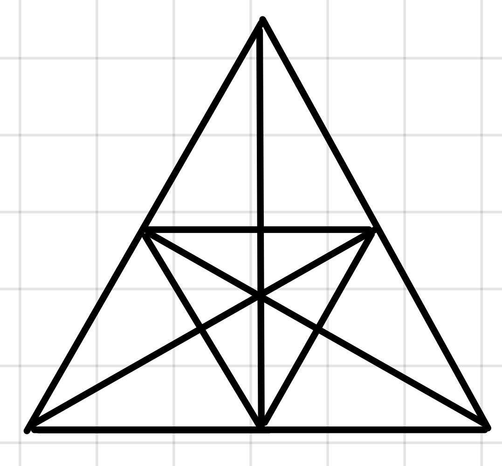

Tehla váži kilo a pol tehly.
Koľko váži jedna tehla?
Koľko rôznych trojuholníkov je na obrázku vytvorených?

O tomto helénskom matematikovi z Alexandrie (nazývanom tiež otec algebry) okrem toho, že žil okolo roku 250 pred Kristom, veľa nevieme. Vďaka jednému z jeho obdivovateľov, ktorý popísal jeho život pomocou algebraických hádaniek, vieme, akého se dožil veku.
Diofantova mladosť trvala 1/6 jeho života. Fúzy mu narástly o ďalšiu 1/12 jeho života. O nasledujúcu 1/7 života sa Diofantos oženil. Po piatich rokoch sa mu narodil syn. Syn žil presne 1/2 dĺžky života svojho otca. Diofantos zomrel 4 roky po smrti svojho syna.
Ako dlho žil Diofantos?
V Lysej pod Plešatou sa majú veci takto:
Žiadny dvaja obyvatelia nemajú na hlave presne rovnaký počet vlasov.
Žiadny obyvateľ nemá na hlave presne 518 vlasov.
Lysá má viac obyvateľov, než má ktorýkoľvek jej obyvateľ vlasov na hlave.
Aký je najvyšší možný počet obyvateľov?
Nájdite 10-miestne číslo, pre ktoré platí:
prvá číslica značí, koľko núl sa v danom čísle nachádza
druhá číslica predstavuje, koľko jednotiek je v danom čísle
tretia číslica počet dvojok
štvrtá počet trojok atď… až po desiatu, ktorá vyjadruje počet deviatok v čísle